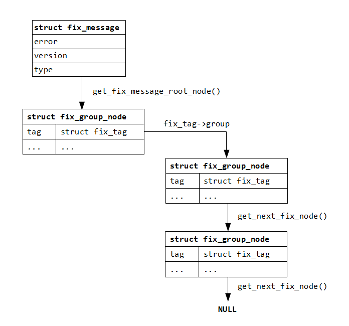

Fast Fix Parser (FFP)
v0.5
What is FFP?
Fast FIX Parser (FFP) is a library for parsing Financial Information
eXchange protocol (FIX) messages. It takes input bytes as they arrive from,
for example, a socket, and converts them into a representation of FIX
messages which can be further analysed for semantic checks, converted into
“business” structures, etc. It also provides a way to specify which tags are
allowed for a particular message and verifies this specification at runtime.
Why another Fix parser?
Yes, there are many other Fix parsers out there. This library aims to
address the following issues with other similar designs:
- Speed. On my rather old Core i5-430M 2.26GHz laptop, in a single
thread, this parser can process about 410,000 messages with groups per
second and about 920,000 simple messages per second. The processing time
is more or less a linear function of the message length.
- It does not impose any particular I/O or threading model. In fact, it
does no I/O at all, and there are no threads running in the background.
This greatly simplifies integration of the library into an existing code
base.
- The parser does not expect every chunk of its input data to be a
complete FIX message. The data can be fed into the parser as they become
available, and the parser splits or combines the input into complete
messages.
- The parser is written in plain C, not in C++. Consequently, it does
not use C++ exceptions for delivering errors. While C++ exceptions is a
convenient mechanism for error reporting and processing, it also affects
overall performance because it usually takes substantial time for an
exception to be propagated from the point where it is thrown to the
point where it gets caught and processed. To make things worse, the time
is implementation dependent. On a high-speed server this time can cause
a serious disruption to the message processing pipelines, also delaying
processing of FIX messages coming from other connections.
Project structure
| File(s)/Directories |
Description |
| fix_parser.h |
Public API of the FFP library. |
| parser/ |
FFP implementation source files. |
| example/ |
Some example code. |
| test.cpp |
Test main function.
|
| test/ |
Some basic unit and performance tests. |
| doc/ |
Documentation. |
So far, the library has been tested using the following platforms and
compilers:
| Platform |
Compiler |
Comment |
| Windows 7 |
Visual Studio 2012 Express |
32bit executable |
| Windows 7 |
MinGW (gcc version 4.7.2) |
32bit executable |
| Linux 64bit |
gcc version 4.7.2 |
64bit executable |
Data representation and API
Input data are simply raw bytes in the form of a pointer and a number of
bytes from 1 to (theoretically) the maximum value the size_t
type can hold.
Output is in the form of a series of data structures, each representing a
FIX message:

Given a buffer pointer bytes
and a number of bytes in the buffer n,
the top-level fix_message
structures are usually iterated over using code like the following (parser
API functions highlighted):
const struct fix_message* msg;
for(msg = get_first_fix_message(parser,
bytes, n); msg; msg = get_next_fix_message(parser))
{
if(!msg->error)
dispatch_message(msg);
else
process_message_error(msg->version, msg->type, msg->error);
}
The loop iterates while msg
pointer returned is not null. Also, notice the check for error inside the
loop; more about error processing later. The fix_message
structure itself contains only a few attributes of the FIX message, but it
can also be used to find the root node of the message via function get_fix_message_root_node().
This function returns a pointer to another type, struct
fix_group_node. Essentially, this type is a map from a tag code to
the data associated with the tag. The main function to get the data
associated with a tag is get_fix_tag()
which returns a pointer to a struct
fix_tag. The tag data may either be a null-terminated string of
chars or a pointer to the first element of a group. In the former case the value member of struct
fix_tag is set to point to the first character of the string and
the length member holds the
number of chars in the string excluding the terminating null. There are also
a few functions that can extract the tag data converted to a particular
type, e.g., a double. If the tag represents a group then the value
pointer is set to null, length
attribute is set to the number of elements in the group and group
attribute points to the first element in the group. The code to iterate over
all items in a group may look like the following:
const struct fix_group_node* pnode;
const struct fix_tag* pt = get_fix_tag(current_node,
384); // assuming "384" is a group tag
if(!pt) // the tag
must be present, even if the group is empty
{
printf("No group
tag\n"); // error
return;
}
for(pnode = pt->group; pnode; pnode
= get_next_fix_node(pnode))
// loop over all group nodes
{
// process node
here
}
For more detailed examples please refer to the example.c
file.
Parser control tables
The parser is controlled by a set of tables describing valid message
formats. To simplify parser table development a number of helpful macro is
provided. In the following examples only those macro will be used.
To create a new instance of the parser the user has to specify a parser
table entry point in the form of a function, which, given a Fix message
version and type, returns its associated parser table entry. This function
is called a classifier function, or simply classifier. One example of the
function may look like this:
const struct fix_tag_classifier*
example_classifier_func(fix_message_version version, const char*
msg_type)
{
if(version != FIX_4_4)
return
NULL; // only v4.4 is accepted
if(msg_type[1] != 0)
return
NULL; // only one-symbol types in our example
switch(msg_type[0])
{
case 'A':
return
PARSER_TABLE_ADDRESS(Logon);
case '5':
return
PARSER_TABLE_ADDRESS(Logout);
case 'D':
return
PARSER_TABLE_ADDRESS(NewOrderSingle);
default:
return NULL;
}
}
In this simple example only three messages are expected (Logon,
Logout and NewOrderSingle),
in a real production code there will certainly be more of them. The
classifier refers to three parser table entries. A simple entry definition (Logout message) may look like the
following:
MESSAGE(Logout)
VALID_TAGS(Logout)
// header
TAG(49) // "SenderCompID"
TAG(56) // "TargetCompID"
TAG(34) // "MsgSeqNum"
TAG(347) // "MessageEncoding"
// message body
TAG(58) // "Text"
TAG(354) // "EncodedTextLen"
TAG(355) // "EncodedText"
END_VALID_TAGS
DATA_TAGS(Logout)
DATA_TAG(354,
355)
END_DATA_TAGS
NO_GROUPS(Logout)
END_MESSAGE(Logout);
The specified tags will be checked at run-time, with error reported if an
unexpected tag (i.e., not in the specification like the above) is found. It
should be noted that no verification is done on the data associated with a
tag, a user can utilise the conversion functions provided by FFP library for
that purpose.
For more examples of message entry definitions, including those with groups,
please refer to example.c
file.
Error handling
There are two types of errors reported by the parser:
- Message errors;
- Parser errors.
Message errors are reported via a non-null error
pointer of the struct fix_message,
and the errors are "recoverable", i.e. the parser itself remains in a
valid state after this type of error is detected and the message
processing can continue. On the contrary, parser errors are not
recoverable and the only valid operation after such an error has occurred
is closing the parser. Parser errors are indicated via a non-null pointer
returned from the get_fix_parser_error()
function.
Future FFP development
Short/medium term:
- Testing. So far the library has only a few very basic tests using some
FIX messages I picked up somewhere on the Web. That is clearly not
enough. For a better test, a complete implementation of a real-life
protocol is needed, along with a large set of messages conforming to
this protocol to test the implementation. Companies are understandably
reluctant to publish their FIX messages, but without it the correctness
of the code cannot be reliably verified.
- Profiling and optimisation. Though, there is no point in doing that
before the code is well tested.
Long term:
Copyright (c) 2013, 2014, 2015, Maxim Konakov
All rights reserved.
Redistribution and use in source
and binary forms, with or without modification, are permitted provided
that the following conditions are met:
- Redistributions of source code
must retain the above copyright notice, this list of conditions and
the following disclaimer.
- Redistributions in binary form
must reproduce the above copyright notice, this list of conditions and
the following disclaimer in the documentation and/or other materials
provided with the distribution.
THIS SOFTWARE IS PROVIDED BY THE
COPYRIGHT HOLDERS AND CONTRIBUTORS "AS IS" AND ANY EXPRESS OR IMPLIED
WARRANTIES, INCLUDING, BUT NOT LIMITED TO, THE IMPLIED WARRANTIES OF
MERCHANTABILITY AND FITNESS FOR A PARTICULAR PURPOSE ARE DISCLAIMED. IN
NO EVENT SHALL THE COPYRIGHT HOLDER OR CONTRIBUTORS BE LIABLE FOR ANY
DIRECT, INDIRECT, INCIDENTAL, SPECIAL, EXEMPLARY, OR CONSEQUENTIAL
DAMAGES (INCLUDING, BUT NOT LIMITED TO, PROCUREMENT OF SUBSTITUTE GOODS
OR SERVICES; LOSS OF USE, DATA, OR PROFITS; OR BUSINESS INTERRUPTION)
HOWEVER CAUSED AND ON ANY THEORY OF LIABILITY, WHETHER IN CONTRACT,
STRICT LIABILITY, OR TORT (INCLUDING NEGLIGENCE OR OTHERWISE) ARISING IN
ANY WAY OUT OF THE USE OF THIS SOFTWARE, EVEN IF ADVISED OF THE
POSSIBILITY OF SUCH DAMAGE.